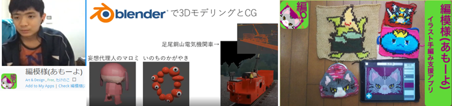
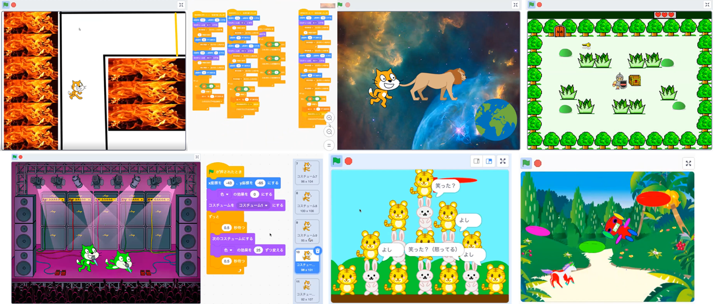
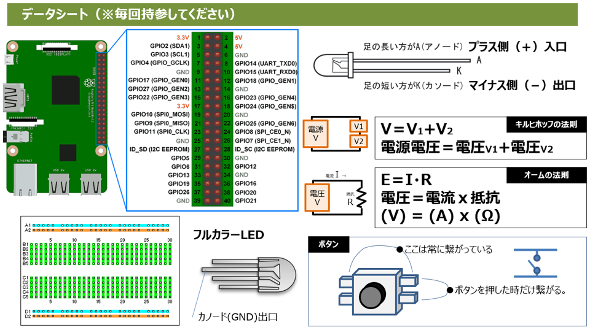

第16・17回 会場とオンライン（2022年1月17日）
本日のテーマは「イラスト制作と電子工作」
午前のScratchプログラミングはスプライトのアイコンとイラスト制作のコツを紹介し、福笑い的なイラスト制作を体験しました。午後のHSP3プログラミングはブレッドボードに電気回路を組み立てる電子工作にチャレンジしました。

本日の流れ
- 第16回 午前：初心者/未経験者向けScratchプログラミング
- 本日の共通テーマは、Scratchでアイコン＆イラスト制作
- みんなの成果発表
- 第17回 午後：ラズパイ電子工作とHSP3プログラミング
- 電子工作の入門編として、ラズパイGPIOでスイッチ入力とLED点灯を制作
今月の青梅Dojo出欠確認です
なんとニンジャ15名（会場6家族, オンライン6名, 午後会場3名, 欠席2）と米国高校/大学/社会人メンター7名で、総勢22名が参加してくれました。そのうち初参加は4名です。
今月のメンター紹介
いつもの強者メンターが用事あって急遽、CoderDojo立川のtakenoko（たけのこ）くんがオンラインでヘルプ参加。自己紹介もしてくれました。Scratchはベテラン過ぎて、今はUnityで3Dアプリ作ってます。編み物/手芸支援してくれるアプリ編模様（あもーよ）の開発者です。

ワークショップ
共通テーマのイラスト制作。まずはアイコン作成のコツから。さて質問です。この丸い図形と四角形と横棒から何を作成できるでしょうか。

正解はこれ。丸と四角の基本的な図形だけを組み合わせることでバランスの整ったきれいなイラストを作ることができます。ひょっとしたら手書きでカギの形を描くよりもスマートかもしれません。
同様に、丸と四角がたくさんあるこの部品から何ができるでしょうか。正解は最下段に表示しますね。
CoderDojo青梅で用意したお題「トラと雪だるまとウサギ」でイラストを完成させよう。子どもたちは完成したイラスト（スプライト）を使って、キーボード操作で左右移動やジャンプをして動くアニメを作ってくれるなど楽しんでくれました。
共通テーマの「Scratchイラスト制作」はこちら↓
イラスト制作｜CoderDojo青梅 Scratchスタジオ今日、はじめて参加したニンジャはメンターとマンツーマン形式で猫逃げなどScratch体験をしました。
午前の部、ワークショップはみんな真剣です。今回から子どもたち机ゾーンと保護者の机ゾーンに分けてみました。子どもたちがお互いに聞いたり教えあったりできたらいいなと思って。慣れるまではメンターを介して子どもと子どもで情報交換できるように工夫してみたいと思います、徐々にね。
作品の発表会
さあ、本日の成果を発表です。人数が増えたこともあって発表したい人だけ優先的に発表することになっています。様々な経験者がいるので、初級のニンジャも発表していいんですよ。プログラムのレベルよりもアイディアやコミュニケーションの方が大切ですから。
炎の迷路はスプライト１個だけ使ってプログラミングで描いたRPG。ステージでダンスするネコは動きもアニメ。初めてニンジャもライオンから逃げるネコ。あ、今日作ったトラとウサギのイラストだ、積み上げてくれたんですね。そして共通テーマのイラストを終えて、自分流の新たなイラストをカラフルに描いた作品も素敵。他にも制作途中なので、発表を見送りニンジャが数名。みんな発表ありがとう！！完成したらCoderDojo青梅スタジオで共有して、みんなにお披露目してねー。

子どもたちのScratch作品は↓ここで
CoderDojo青梅 Scratchスタジオ
第15回 電子工作とHSPプログラミング
青梅IT未来塾の修了生3名が参加しました。1名が当日キャンセル、次回会いましょうね。午後の会は、小型PCのラズパイ（Raspberry Pi）を持参して高度なHSP3プログラミングにチャレンジしようというイベントです。子どもたちにヒアリングした結果、プログラミングよりも電子工作に興味があるとのことだったので、しばらくは電気回路を作って、その回路をラズパイのGPIOで動かすことにしました。
初回は様子見のため、電気回路の入門でやる通称Ｌチカ（LEDをチカチカさせるやつ）で知識のフェーズ合わせから。図面は下記。いきなりラズパイに接続すると怖いので乾電池２個で動作テストして合格してからラズパイに接続しました。
毎回きっと使うデータシート

メンターとのお約束

電気回路の制作は、ブレッドボード、LED、抵抗、スイッチ、ジャンパーケーブルです。あと乾電池とテスターで検査。おや、大人のメンターも真剣に電気回路を工作しているようです。
電気回路は何度も分解して、再度作り直せます。今度は乾電池ではなくラズパイのGPIOに接続して、HSP3プログラミングでスイッチ入力をGPIO12で検査して、GPIO21へ出力することでLEDを点灯するコードを模写します。
今日のHSP3コードはあくまでもサンプル。次回は自分たちで考えてコードを組み立てるんだよ。
ここだけの話。みんなが使ったバッテリー電源は、前日に講師のおこづかいで買ってきた毛玉取り器105円を改造したものです。
次回は、いよいよフルカラーLEDとディップスイッチで楽しいことやるよ。またねー。🙋♂️